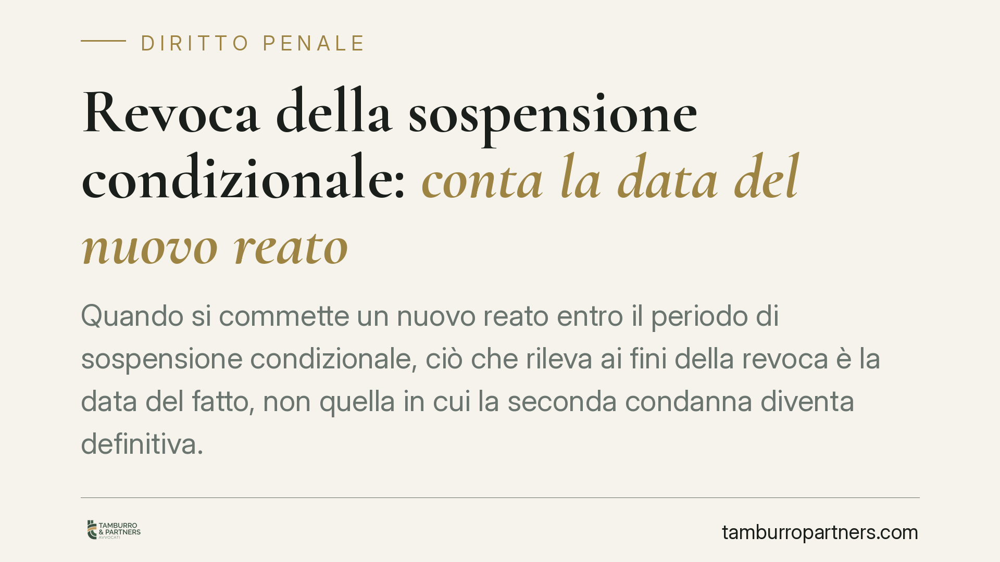

Revoca della sospensione condizionale: conta la data del nuovo reato
Quando si commette un nuovo reato entro il periodo di sospensione condizionale, ciò che rileva ai fini della revoca è la data del fatto, non quella in cui la seconda condanna diventa definitiva. Un principio che incide sulla posizione di chi ha già beneficiato del provvedimento e che merita di essere compreso nei suoi presupposti tecnici.

Il caso
Un condannato che aveva ottenuto la sospensione condizionale della pena commette un nuovo reato. La questione portata all'attenzione dei giudici riguarda il momento da cui far decorrere la valutazione ai fini della revoca: la data in cui il nuovo reato è stato materialmente commesso, oppure quella in cui la relativa sentenza è divenuta irrevocabile.
La Corte di Cassazione, sezione V penale, con pronuncia depositata il 6 novembre 2025 (estremi in attesa di pubblicazione ufficiale, da verificare), ha dato continuità all'orientamento secondo cui rileva la data di commissione del fatto. È stata quindi respinta l'impostazione che ancorava la revoca alla definitività della seconda condanna.
Inquadramento normativo
Occorre tenere distinte due norme che spesso vengono confuse.
L'art. 163 c.p. disciplina la sospensione condizionale della pena e ne fissa i termini: cinque anni per i delitti, due anni per le contravvenzioni. È il periodo entro il quale il condannato deve astenersi da nuove condotte penalmente rilevanti perché il beneficio si consolidi.
L'art. 168 c.p. disciplina invece la revoca del beneficio. Tra le ipotesi previste rileva quella del soggetto che, durante il periodo di sospensione, commette un delitto o una contravvenzione della stessa indole per cui viene inflitta una nuova pena detentiva. Sono presupposti che vanno letti con attenzione: non ogni nuova condanna comporta automaticamente la revoca, ma solo quella che rientra nei parametri fissati dalla norma (natura del reato, tipo di pena, indole nel caso delle contravvenzioni).
Il punto controverso non è quindi *se* la revoca operi, ma *quale sia il momento* da considerare per verificare che il nuovo reato ricada nel periodo di sospensione.
Perché la distinzione conta
La scelta tra data del fatto e irrevocabilità della sentenza non è un dettaglio formale.
Ancorare la valutazione all'irrevocabilità significherebbe far dipendere la revoca dai tempi del processo, che il condannato non controlla e che variano da caso a caso. Il criterio della data di commissione, invece, guarda alla condotta concreta del soggetto.
La ratio è coerente con la funzione dell'istituto. La sospensione condizionale poggia su una prognosi: il giudice scommette che il condannato si asterrà dal commettere nuovi reati. È la condotta, non l'esito processuale, a incrinare quella prognosi. Se il nuovo reato viene commesso nel periodo di sospensione, la fiducia riposta nel condannato risulta smentita a prescindere da quando la sentenza diventerà definitiva.
La Corte, in questa lettura, conferma un principio già consolidato più che introdurne uno nuovo.
Implicazioni pratiche
Per chi ha ottenuto la sospensione condizionale, il messaggio è concreto: il periodo di prova va calcolato con riferimento alla data dei fatti eventualmente contestati, non alla loro definizione giudiziaria.
Un reato commesso poco prima della scadenza del termine può fondare la revoca anche se il relativo processo si concluderà molto più tardi. Al contrario, un fatto commesso dopo la scadenza del periodo di sospensione non rileva ai fini della revoca ex art. 168 c.p., anche se accertato in un momento successivo.
Resta ferma la necessità di verificare in concreto che ricorrano tutti i presupposti dell'art. 168: tipo di reato, natura della pena inflitta, requisito della stessa indole per le contravvenzioni.
Cosa fare in concreto
- Verificate la data esatta di commissione del reato oggetto della nuova contestazione e confrontatela con il termine di sospensione (cinque anni per i delitti, due per le contravvenzioni ex art. 163 c.p.).
- Controllate la natura della nuova condanna: accertate se sia stata inflitta una pena detentiva e se il reato rientri tra quelli rilevanti ai sensi dell'art. 168 c.p.
- Non fatevi guidare dai tempi del processo: l'irrevocabilità della seconda sentenza non sposta il momento rilevante per la valutazione.
- Raccogliete la documentazione relativa a entrambi i procedimenti (sentenza sospesa e nuova contestazione) prima di formulare qualsiasi valutazione difensiva.
- Consigliamo di sottoporre il caso a un professionista per verificare la sussistenza dei presupposti della revoca e le eventuali strategie difensive, che dipendono dai dettagli concreti.
---
Contributo informativo a cura di Tamburro & Partners - Avv. Giuseppe Tamburro. Non costituisce parere legale.
Ogni condominio ha una storia a sé.
Se gestisci un'amministrazione e vuoi un confronto su una specifica questione condominiale, scrivi allo studio. Ti rispondiamo entro un giorno lavorativo.